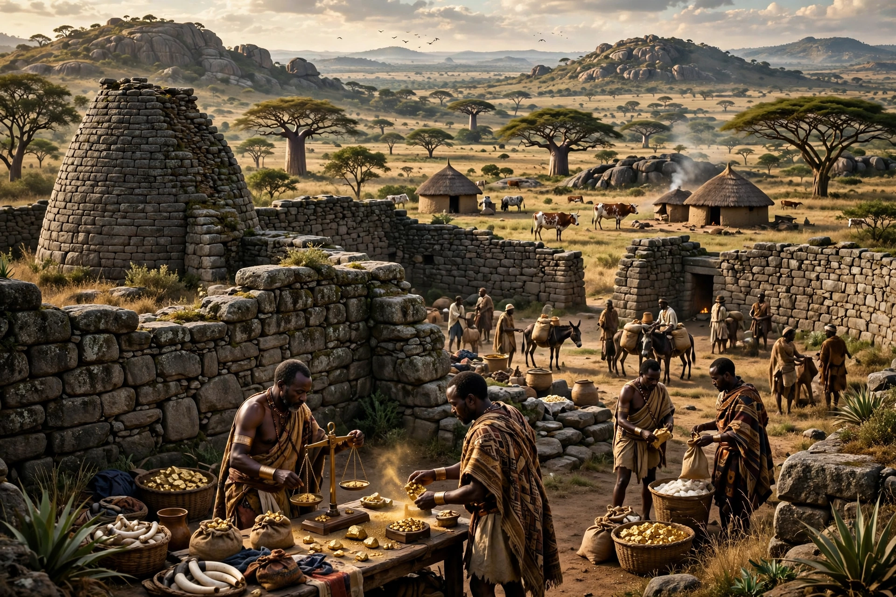

| Kingdom of Mutapa | |
|---|---|
 | |
| Region | Zimbabwe plateau / Zambezi valley |
| Ruler | Mwene Mutapa (Monomotapa) |
| Period | c. 1430 – 1760 |
The Kingdom of Mutapa (Mwana Mutapa, rendered "Monomotapa" by the Portuguese) was a Shona kingdom in present-day Zimbabwe and Mozambique, successor in part to Great Zimbabwe.
Oral tradition credits Nyatsimba Mutota, a prince from Great Zimbabwe, with founding the state around 1430 by conquering the Zambezi valley's salt and trade routes. His son Matope extended its reach toward the Indian Ocean. Mutapa controlled gold and ivory exports through Swahili and later Portuguese ports such as Sofala.
From the 1560s Portuguese missionaries, traders and mercenaries penetrated the kingdom; treaties granted mining and trading concessions. Internal succession wars and pressure from the Rozvi Empire weakened Mutapa in the 17th–18th centuries, reducing it to a small Zambezi-valley state by about 1760.